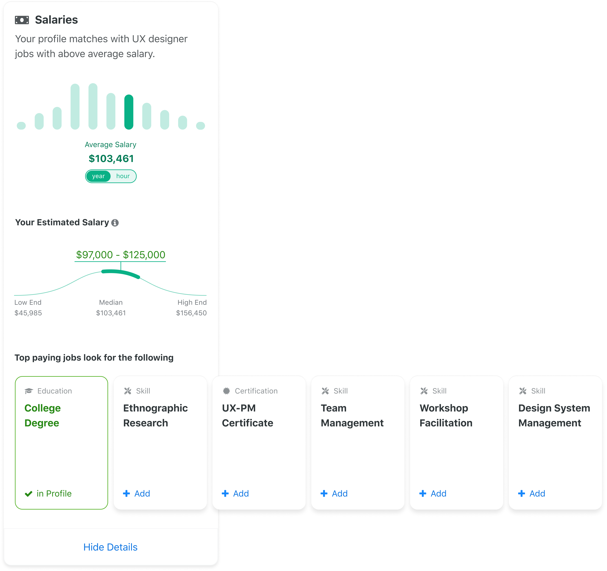
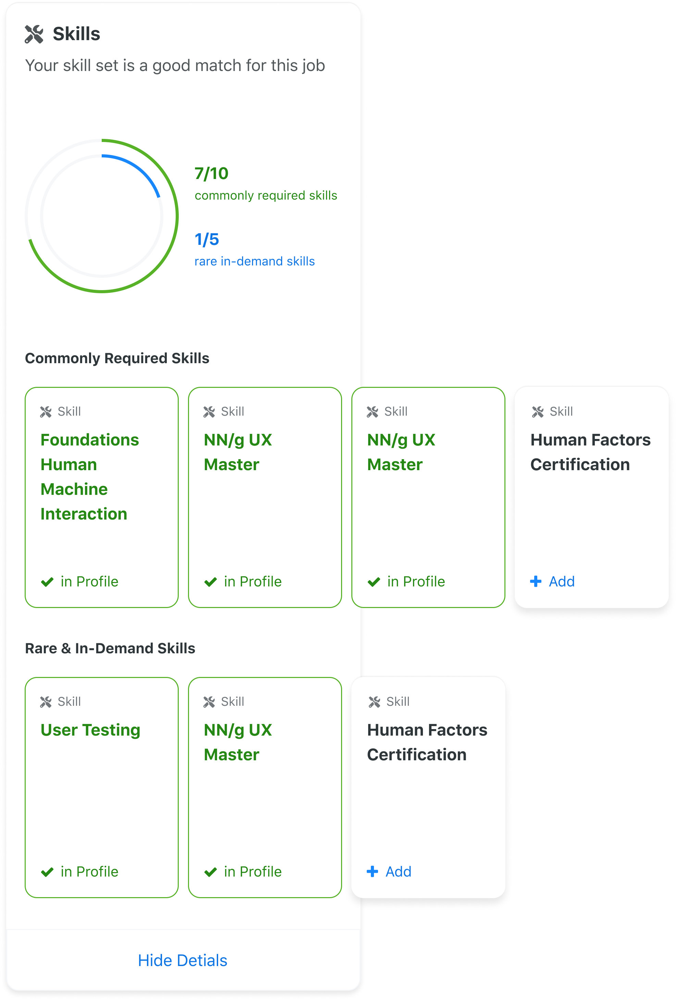
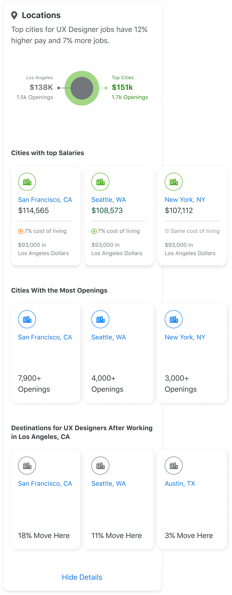

Discover & explore
Experiences and features to help job seekers find relevant opportunities at key points in their journey.

High quality job seekers don't always appear that way to hiring managers because of poorly constructed resumes and profiles.
Research & Opportunity
The way hiring managers write job descriptions is generally different from the way candidates applying to those same jobs write about their experience. Perfectly qualified candidates often do not appear to be a good match. Educating both sides means employers discover more high quality candidates and job seekers are able to better present and improve themselves.
Exploring solutions

Results

Career advisor compares information from a user's profile to details in job posting for their industry so high quality candidates can improve how they are presented while less qualified ones can see what they should work on.


